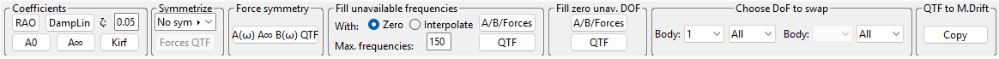

Hydro Coeff / Process
This menu does some processes on the hydrodynamic coeffcients.

Coefficients
Obtains some coefficients such as RAO, the added masses A0 and A∞, the impulse response function Kirf, and the linear damping DampLin, considering a critical damping ζ between 0 and 1. The results will appear in the correpnding tabs.
Symmetrize
Spreads the actual first and second order (QTF) forces considering symmetries XZ, YZ or both.
Force symmetry
Forces matrices A(ω), A∞, B(ω) and QTF to be symmetric.
Fill unavailable frequencies
Fills the data for unavailable frequencies with zeroes, or interpolated data, for A, B, first order or second order forces (QTF), until a maximum number of frequencies.
Fill zero unav. DOF
Fills with zeroes the data for missing degrees of freedom.
Choose DoF to swap/Swap DOF
Swaps the hydrodynamic coefficients data between degrees of freedom in the same body or between bodies.
QTF to M.Drift
Extracts the mean drift from the difference QTF to fill the mean drift data.
|